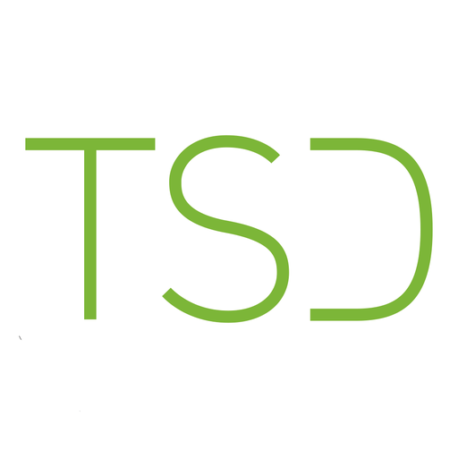

PRODUCT DEVELOPMENT
アイデアを製品に近づけるときに考えていること
思いつきのままでは商品にならないアイデアを、使う人、売る場所、作り方の条件から整理していく過程について。
NOTE

CREATOR
商品開発の現場で考えたこと、うまくいったこと、迷ったこと。実際の経験をもとに、ものづくりの視点を記録していきます。
PRODUCT DEVELOPMENT
思いつきのままでは商品にならないアイデアを、使う人、売る場所、作り方の条件から整理していく過程について。
DESIGN / ENGINEERING
見た目の良さだけでなく、材料、構造、コスト、量産性まで含めてデザインを成立させるための考え方について。
MANUFACTURING
試作品で見えてくる課題をどう整理し、量産に向けてどこを調整していくのか。現場での確認ポイントについて。